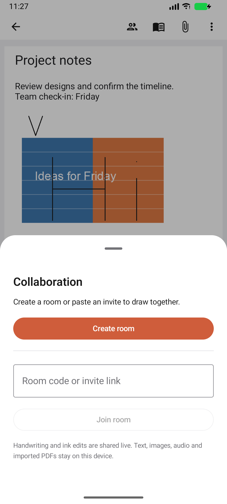
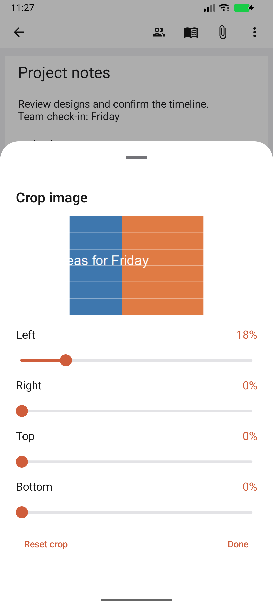
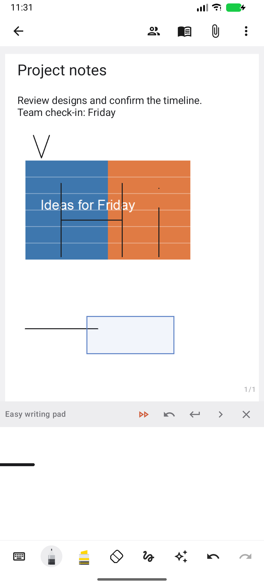

Version 1.3 (19) continues the Samsung Notes reconstruction with mixed-content selection, non-destructive image crop/rotation, and an automatically advancing writing pad. The existing collaboration service and message types remain in use.
| Feature | Implemented behaviour |
|---|---|
| Mixed selection | Lasso or rectangle-select ink, text boxes and images together, including partial-selection and ink-only options. Move, resize, copy, cut, paste, duplicate and delete the group, with document undo/redo. Rich text and checklists retain their content; pasted images receive independent files so deleting the source note does not remove the destination image. Clipboard content remains app-local. Rotation/flip of a mixed group containing text or images is disabled; individual images have their own rotation control. |
| Images | Non-destructive crop on all four edges, a rendered crop preview, reset crop, and 90-degree rotation. Select an image with the lasso, open Selection options → Edit image, then use Crop or Rotate. The same crop and rotation are used on the page, in thumbnails and in image/PDF export. Crop edits are one undoable operation; the original image file is retained. |
| Writing pad | The magnified pad advances when a completed pen stroke reaches its right-hand threshold; it wraps to the next line near the page edge. Automatic advance can be disabled. Drag the highlighted target rectangle on the main page to reposition the writing area. Explicit advance, next-line and undo remain available. |
| Document persistence | Version 4 documents save image crop/rotation and the note’s collaboration room. Earlier version 3 documents and legacy stroke arrays remain readable. Notes reopen their saved room; Leave room removes that association. Document undo does not change room membership. |
The visible Collaboration button opens Create room, Join by code/link, Reconnect, Share invite and Leave room controls. The production endpoint remains wss://drawly.smartattendance.xyz/ws; invite links still use https://drawly.smartattendance.xyz/r/…. No worker deployment or production-room test was performed.
| Area | Change |
|---|---|
| Connection timing | Existing ink is published after the new room connects, rather than being sent prematurely and silently lost. Pending local edits are retained while disconnected and published on reconnect. |
| Socket lifecycle | Room subscriptions have generation guards. Removing an old subscription cannot close a newer room, and stale callbacks are ignored. Server close handshakes are acknowledged, interrupted connections retry, and the panel shows the actual connection state. |
| Stable stroke identity | Canvas updates keep the original stroke ID instead of adding another participant prefix on every trip. Existing prefixed IDs remain accepted. Message names and fields stay compatible with the existing server. |
| Peer ink and undo | Received ink changes are rebased into document history, so local undo/redo preserves peer ink in the tested sequences. Pressure, tilt, timestamps, page identity, pen settings, erasing and selection transforms continue through the shared-ink messages. |



All 50 tests passed: 12 JVM tests and 38 Android tests, including three local TLS/WebSocket collaboration tests. The network tests cover initial ink publication, a second participant joining by link, pressure/tilt and page metadata, selection movement, erasing, undo, service-close reconnect, old-subscription isolation and preservation of peer ink during undo/redo. Editor tests cover mixed selection, independent pasted image files, rendered crop pixels, image rotation, old-document compatibility, automatic pad advance and dragging its target. The installed APK was also reviewed manually using the screenshots above. Lint: 0 errors, 77 warnings. The unchanged collaboration worker passes TypeScript checking. Build/test log: build-ui-remaining-complete.log (local ignored artifact).
The final writing-pad correction was checked with seven additional passing UI/network checks, including entering the pad from lasso mode and all three collaboration tests (build-ui-remaining-pad-final.log).
APK: C:\Users\vardh\AndroidStudioProjects\Notepad\app\build\outputs\apk\debug\app-debug.apk, version 1.3 (19). SHA256: 98ED6F50ED163C2D8DBD64AF25446283A1516B4FFFF514140825FC6C2CFA5209.
This is not a complete or pixel-identical Samsung Notes clone. Samsung account/cloud, private .sdoc/.sdocx compatibility, AI services, image OCR, transcription, Office exports, widgets, screen-off memo and device-specific gestures are not implemented. Text remains positioned page content rather than a flowing Samsung document. Physical S Pen latency, biometric/microphone hardware and successful recognition-model download need device/network validation. Note locks remain device-authentication gates rather than encrypted files.
Earlier screen reconstruction and screenshots: Notes 1.2 report. Earlier document engine details: Notes 1.1 report.